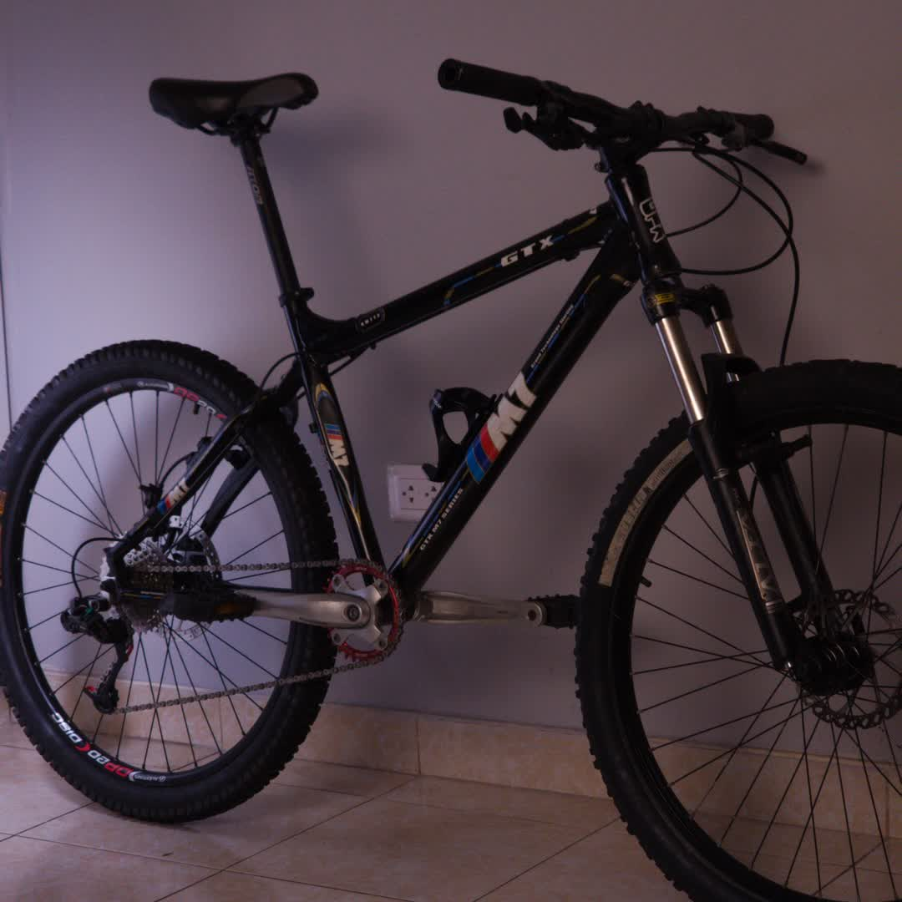
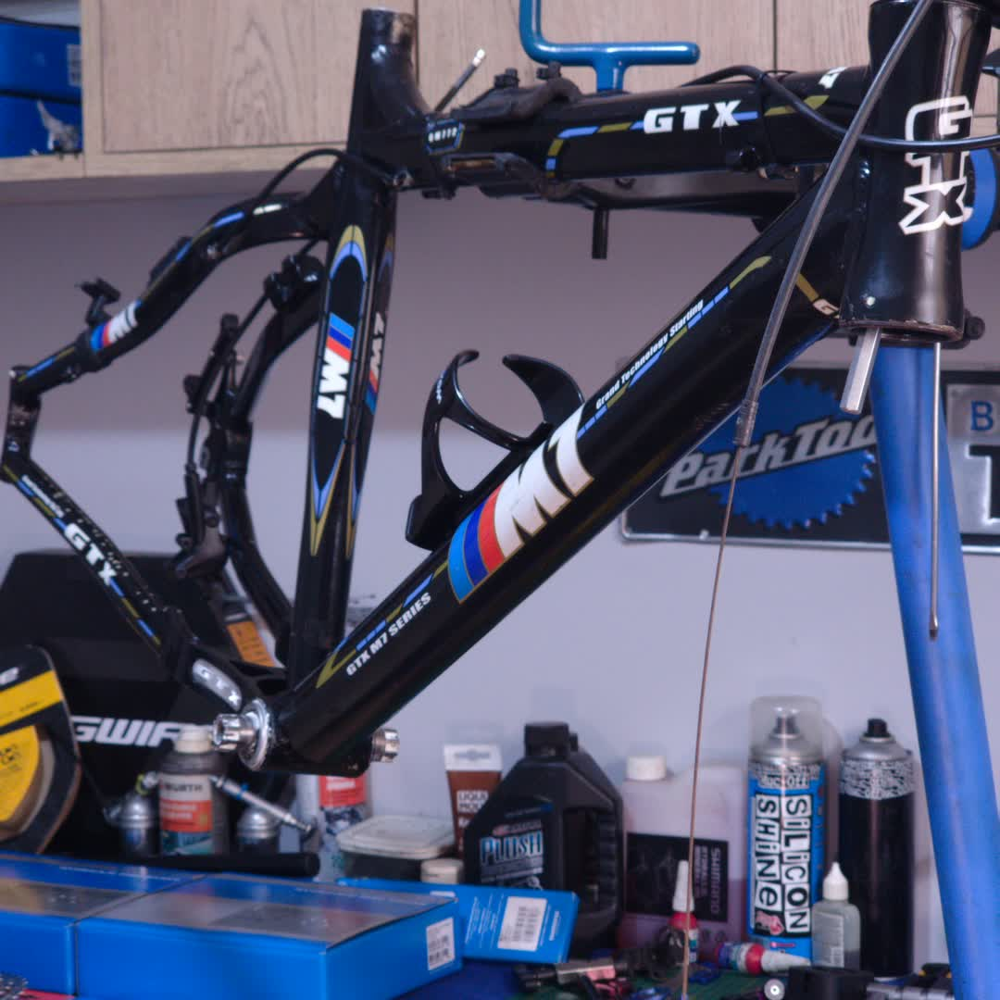
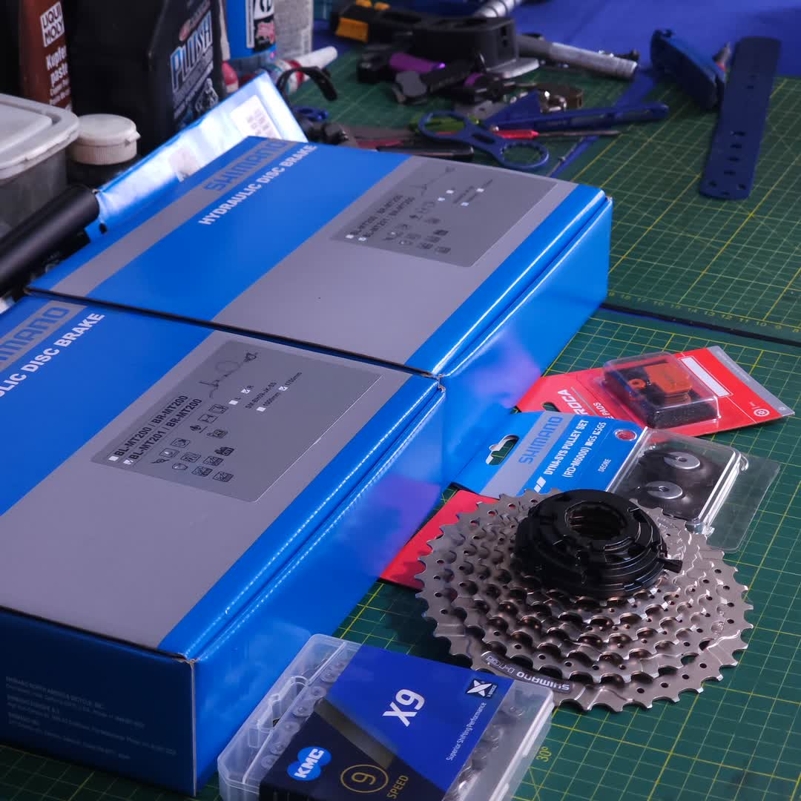

RESPOSTA DIRETA
A pegada de carbono de fabricar um quadro de bicicleta varia até uma ordem de magnitude conforme o material. Por quadro típico: alumínio reciclado ~0,47–0,74 kg CO₂, aço ~4,75–6,25 kg, fibra de carbono (CFRP) ~22,2–39,2 kg, alumínio primário ~26,6–32,4 kg e titânio o mais alto, ~70 kg CO₂. Um quadro de carbono de alta gama como o Trek Madone reporta ~57 kg CO₂. O alumínio reciclado emite cerca de 95% menos que o primário. Na fabricação, os materiais mais limpos são o alumínio reciclado e o aço; o titânio e o carbono são os mais intensivos. A pegada total real depende ainda do ciclo de vida completo do quadro.
O conceito de energia incorporada (embodied energy) representa o consumo energético total requerido para extrair, processar, transportar e fabricar um material até sua forma final utilizável. No contexto de quadros de bicicleta, esta métrica adquire relevância crítica ao avaliar o impacto ambiental real de cada escolha de material.
Os dados verificados do período 2021-2026 revelam disparidades significativas entre materiais estruturais:
| Material | Energia (MJ/kg) | Quadro típico (kg) | Total (MJ) |
|---|---|---|---|
| Alumínio primário | 180-191 | 1.5-2.0 | 270-382 |
| Alumínio reciclado | 8,1-9 | 1.5-2.0 | 12.2-18 |
| CFRP (Fibra de carbono) | 262-498 | 1.0-1.3 | 262-647 |
| Aço cromo-molibdênio | 32 | 2.2-2.8 | 70-90 |
| Titânio Ti-3Al-2.5V | 800 | 1.3-1.6 | 1040-1280 |
O alumínio reciclado exibe uma eficiência energética de 95% comparado ao alumínio primário, resultado da economia nos processos de eletrólise Bayer-Hall. Este diferencial termodinâmico fundamenta a viabilidade técnica da circularidade em ligas de alumínio.
As emissões de CO₂ equivalente durante a fabricação constituem o indicador primário de impacto climático. A análise quantitativa revela que a seleção de material pode variar as emissões até em uma ordem de magnitude.
Em palavras: a pegada total é simplesmente o peso de cada material multiplicado por quanto CO₂ custa produzir esse material (seu fator de emissão), somando tudo. Por isso o material pesa mais que o peso: um quadro de titânio leve pode poluir mais que um de aço pesado, porque fabricar um quilo de titânio emite muitíssimo mais CO₂ que um quilo de aço.
| Material | Emissões (kg CO₂/kg) | Quadro típico (kg) | Pegada total (kg CO₂) |
|---|---|---|---|
| Alumínio primário | 14,77-18,0 | 1.8 | 26.6-32.4 |
| Alumínio reciclado | 0,26-0,41 | 1.8 | 0.47-0.74 |
| CFRP | 19.3-34.1 | 1.15 | 22.2-39.2 |
| Aço | 1,9-2,5 | 2.5 | 4.75-6.25 |
| Titânio | 48,33 | 1.45 | 70.1 |
O estudo de caso Trek Madone (quadro CFRP de alta gama) reporta uma pegada total de 57 kg CO₂ na sua fabricação, valor que inclui o processo completo de layup, cura em autoclave e acabamento superficial [4].

A amortização da pegada de carbono mediante uso ativo constitui o argumento termodinâmico central para a extensão do ciclo de vida. A razão de compensação calcula-se comparando as emissões de fabricação contra as emissões evitadas por substituição de transporte motorizado.
Para um quadro de fibra de carbono com pegada de 57 kg CO₂, substituindo um automóvel médio (220 g CO₂/km):
Este cálculo demonstra que o investimento energético de fabricação se neutraliza em aproximadamente 259 km de uso, assumindo substituição total de viagens de automóvel. Em condições urbanas de uso misto, este limiar se atinge tipicamente entre 3-6 meses de ciclismo regular.
| Material de quadro | Pegada (kg CO₂) | km para compensar vs auto | km para compensar vs ônibus |
|---|---|---|---|
| Alumínio primário | 30 | 136 | 297 |
| Alumínio reciclado | 0,6 | 3 | 6 |
| CFRP | 57 | 259 | 564 |
| Aço | 5,5 | 25 | 54 |
| Titânio | 70 | 318 | 693 |

A sustentabilidade estrutural não equivale a negligência operacional. Os sistemas de transmissão, frenagem e rolamentos constituem elementos consumíveis cuja renovação periódica é imperativa para integridade funcional e segurança do usuário.
A razão 142:1 entre a pegada do quadro e um cassete Shimano demonstra que a substituição de componentes críticos gera um impacto ambiental desprezível comparado à estrutura do quadro, ao mesmo tempo que garante a operação segura do sistema.
| Componente | Pegada aprox. (kg CO₂) | Vida útil típica (km) | Criticidade segurança |
|---|---|---|---|
| Corrente (11v) | 0.3-0.5 | 3,000-5,000 | ALTA |
| Cassete (11v) | 0.4-0.6 | 8,000-12,000 | ALTA |
| Pastilhas de freio | 0.1-0.2 | 1,500-3,000 | CRÍTICA |
| Rotores de freio | 0.3-0.4 | 10,000-15,000 | CRÍTICA |
| Rolamentos (jogo) | 0.2-0.3 | 5,000-10,000 | MÉDIA |
A renovação preventiva destes elementos não só cumpre protocolos de segurança, como otimiza a eficiência tribológica do sistema, estendendo indiretamente a vida útil do quadro ao reduzir cargas dinâmicas anômalas.
A reciclabilidade efetiva de materiais estruturais determina a viabilidade de uma economia circular na indústria ciclista. Os dados atuais revelam uma disparidade crítica entre diferentes materiais.
| Material | Reciclabilidade real (%) | Economia energética | Estado tecnológico |
|---|---|---|---|
| Alumínio | 78-85% | 95% | Tecnología madura |
| Aço | 85% | 90% | Forno a arco elétrico (EAF) |
| CFRP | <5% | N/A | Downcycling para fibras curtas |
| Titânio | ~40% | 60-70% | Limitado por contaminação |
A fibra de carbono apresenta o paradoxo mais significativo: material de alta performance com circularidade praticamente nula. Os processos atuais de reciclagem de CFRP se limitam a trituração mecânica ou pirólise para recuperação de fibras curtas, aplicáveis unicamente em produtos de baixo valor agregado. Esta limitação técnica questiona a narrativa de "sustentabilidade" frequentemente associada a quadros de carbono de alta gama.
A Trek Bicycle Corporation representa um estudo de caso relevante em transparência de LCA e compromisso quantificável com redução de emissões [4].
Sustainability Report 2024 - Dados verificados:
Esta abordagem estabelece um precedente verificável na indústria, demonstrando que a rastreabilidade de emissões e os limites quantitativos são tecnicamente viáveis em escala de produção em massa.
O prolongamento do ciclo operacional de um quadro mediante protocolos de manutenção preventiva não é uma opção comercial: é uma obrigação termodinâmica. A razão 142:1 entre estrutura e consumíveis define a equação de responsabilidade técnica.
Os dados apresentados estabelecem três princípios verificáveis:
1. Hierarquia de impacto material: O alumínio reciclado oferece o perfil mais favorável (0,6 kg CO₂ por quadro), seguido pelo aço (5,5 kg CO₂), enquanto titânio e CFRP apresentam as pegadas mais significativas (70 e 57 kg CO₂ respectivamente).
2. Limiar de compensação: Mesmo os materiais de maior impacto atingem neutralidade de carbono em distâncias de uso moderadas (259-318 km substituindo transporte motorizado), validando a bicicleta como modo de transporte de baixo impacto em análise de ciclo de vida completo.
3. Paradoxo de circularidade: Os materiais de "alta performance" (CFRP, titânio) exibem as menores taxas de reciclabilidade (<5% e ~40%), invertendo a correlação esperada entre preço e sustentabilidade material.
A engenharia sustentável requer decisões baseadas em dados quantificáveis, não em narrativas de marketing. A responsabilidade do técnico é garantir que a estrutura opere dentro de parâmetros de segurança enquanto se maximiza a vida útil do investimento energético de fabricação.
[ CLUSTER_DATA_LINKS ] // MATERIAIS E INTEGRIDADE ESTRUTURAL
A extensão da vida útil do carbono e outros materiais se alcança unicamente mediante protocolos exatos e diagnóstico avançado. Revise estes guias de aplicação direta na oficina:
Depende do material e varia até uma ordem de magnitude. Por quadro típico: alumínio reciclado ~0,47–0,74 kg CO₂, aço ~4,75–6,25 kg, fibra de carbono (CFRP) ~22,2–39,2 kg, alumínio primário ~26,6–32,4 kg e titânio ~70 kg CO₂. Um quadro de carbono de alta gama como o Trek Madone reporta ~57 kg CO₂.
O alumínio reciclado e o aço. O alumínio reciclado emite cerca de 0,26–0,41 kg CO₂ por kg, 95% menos que o alumínio primário. O aço ronda 1,9–2,5 kg CO₂ por kg. O titânio (≈48 kg CO₂/kg) e a fibra de carbono são os mais intensivos em energia e emissões.
Não na sua fabricação. O CFRP emite 19,3–34,1 kg CO₂ por kg e, apesar de o quadro pesar menos (~1,15 kg), sua pegada total (22,2–39,2 kg) é comparável ou superior à do alumínio primário. Além disso, o carbono é difícil de reciclar no fim de sua vida útil.
Porque sua extração e processamento (redução Kroll, fundição a vácuo e conformação) são extremamente intensivos em energia: cerca de 48 kg CO₂ por kg de material, o que leva um quadro típico a ~70 kg CO₂, a cifra mais alta entre os materiais analisados.